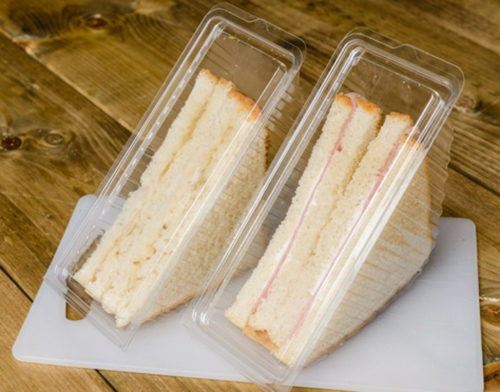
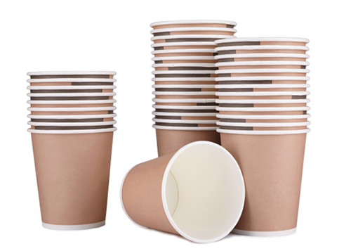
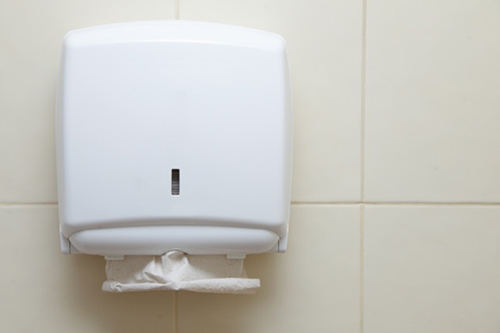
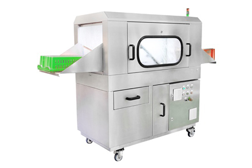
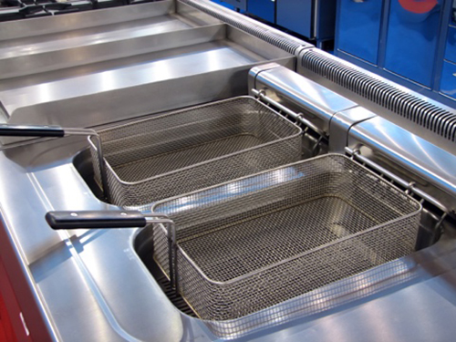
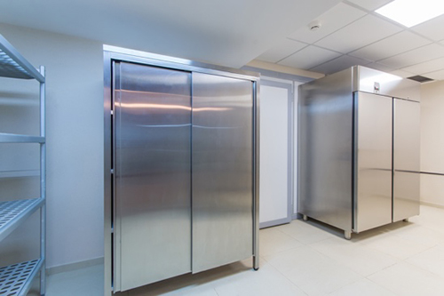
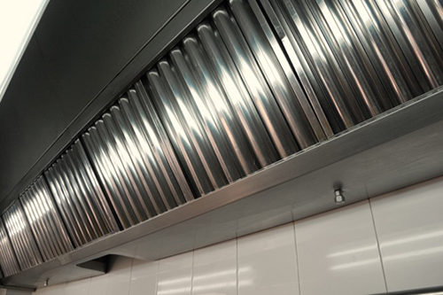
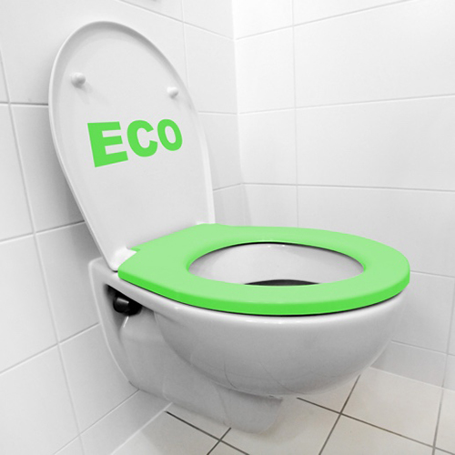
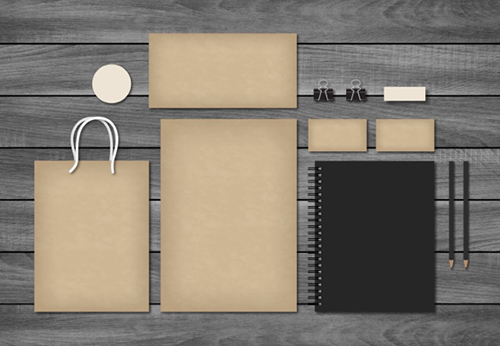
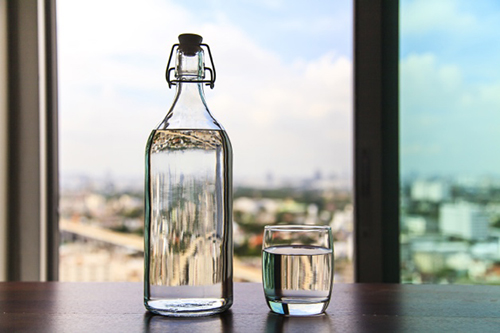

Task 4: Sustainability
Click 'NEXT' to start.
Click 'NEXT' to start.
All professional kitchens use physical and natural resources to provide the end product for their customers. These resources all have an impact on the environment and can be developed to provide a sustainable business model.
The resources include:
Utilities are used throughout the delivery of products and services from a professional kitchen.
This includes using utilities for:

A reduction in the use of utilities will reduce costs and increase the profitability of the business. It will also support the sustainability of the business and, if carefully advertised, can help the reputation of the business.
| Utility | How it is wasted | How to minimise |
|---|---|---|
| Gas |
|
|
| Electricity |
|
|
| Water |
|
|
Food is a resource and there is a limit as to what the planet can provide. Sustainable farming and growing methods are now being employed to help protect this vital resource.
Professional chefs must understand that food used throughout the delivery of the final product to the customer must be efficiently stored, prepared and cooked.
Food packaging has a detrimental effect on the environment if not correctly dealt with. In recent times manufacturers have decreased the levels of packaging to meet strict environmental targets set by the government.
As a waste product, local councils have also increased the costs involved in its disposal, pressuring suppliers and food businesses to increase the ‘reduce, reuse and recycling’ of packaging.
This ongoing trend has seen developments such as milk being delivered in plastic bags rather than bottles, fruit supplied without packaging etc.
In order for the food industry to achieve reductions in packaging, innovation is required. Recent developments include:
The most potent reduction in packaging seen in the UK was first introduced in Wales in 2011 – the charge for using plastic bags.
This initiative has reduced their use by 71%.
A by-product of this has been the money raised from the charge, which is donated to charity. This is estimated at between £17 and £22 million in Wales alone.
| How it is wasted | How to minimise | |
|---|---|---|
| Food |
|
|
| Packaging |
|
|
Sundries are the products you require to run a business which do not normally cost too much but are necessary to provide your service to the customer. This may include paper towels, cleaning equipment such as mops, cleaning chemicals, clingfilm etc.
Equipment is a major cost to any business. In a professional kitchen a simple cooker range can cost up to £5,000.
Depending on the type of kitchen the costs can become large, if fitting out a new build – anything up to £150,000. Chefs need to understand there is a serious cost involved in equipping a professional kitchen.
| How it is wasted | How to minimise | |
|---|---|---|
| Sundries |
|
|
| Equipment |
|
|
There are numerous schemes that accredit products, services and goods as part of a sustainable programme for organisations to advertise their ethical approach to providing for the consumer. These include:
Red Tractor
This assurance scheme was created in 2000 by the food industry to ensure food is sourced from a safe and trustworthy source. It covers:
It is funded by its members and the food industry at large and its mission is to:
Ethical Trading Initiative
An alliance of Non-Governmental Organisations, companies and trade unions and their mission is to ensure workers are:
Ethical trade is where individual companies take on the responsibility to improve the lives of those works who have made them. Companies normally adopt a Code of Practice that they expect all their suppliers to abide by. This code will include such issues as:
Fairtrade
Fairtrade is a movement dedicated to change that works alongside organisations and businesses in making trade work for farmers and workers. Fairtrade is an independent organisation that licences its trademark logo to organisations and companies that comply with its standards. Its objectives are:
RSPCA Assured
This is an ethical labelling system dedicated to the welfare of farm animals. It is controlled by the Royal Society for the Prevention of Cruelty to Animals (RSPCA). Its vison is for all farm animals to have a good life and to be treated with compassion and respect.
Its logo can be found on eggs, meat and poultry and business and consumers can be assured that this means that the welfare of the animals has met the RSPCA Animal Welfare Standards.
RSPCA Assured labelled products are also fully traceable back to their origins.
Marine Stewardship Council (MSC)
The MSC is a non-profit international organisation dedicated to addressing the issues with unsustainable fishing and safeguarding supplies for the future. The MSC Certified Labelling Scheme ensures all products have been responsibly caught from sustainable fisheries. The MSC supports the sustainability of fisheries through:
The MSC also provides traceability to products they have certified. This is achieved through an independent DNA testing regime.
Food miles is the distance that food travels before being consumed. This includes the distance from the processing point of the food, to the supplier and finally the consumer.
The effects of food mileage are best seen in figurers:
One of the best ways to support sustainability and the environment is to reduce this mileage. In doing so, we will:
Ways to reduce food miles
There are several areas in which we can reduce food miles to support a more sustainable approach for the food industry, including:
The Kyoto Protocol was signed by the UK in 1998. This protocol commits countries around the world to reduce their greenhouse gases. It recognises that climate change is happening and it has been caused by humans. The focus is on reducing the amount of CO2 emissions around the planet.
The EU set three targets for 2020:
This has seen a move away from high-carbon energy sources, such as coal, to more efficient and less polluting sources, such as gas and renewables. Renewables are natural resources that can be converted to energy, such as sunlight, wind, tides and geothermal heat. All can be used, as they are continually replaced by nature.
The food and drink processing industry is the fourth largest user of energy in the UK. The catering facilities, within the hospitality industry, typically spend 4–6% of their operating costs in energy. It has been estimated that a typical catering outlet uses 40% of its energy requirements to prepare and store food; the rest of the energy is dispersed within the kitchen as heat.
In order for a food business to reduce its costs and become a more efficient user of energy, it will need to consider the following:
Food businesses can support the targets of both the Kyoto Protocol and the EU by ensuring the efficient use of buildings and equipment. Staff are the most important resource from which to create savings. They must be trained, supervised and updated to ensure best practices, such as following manufacturers’ instructions.
Further information to support energy usage and savings can be found on the Carbon Trust website: type ‘sector specific publication’ in the search tool then select ‘food and catering sector overview’.
The hospitality industry is a large natural resource user within the UK. Any efforts to reduce resources – both natural and physical – is good for the business and the environment. Food businesses can achieve this through the following.
|  |  |  |  |
| Using sandwich wedges made from biodegradable materials, such as polylactic acid. | Cups and salad containers that are made from materials that are compostable. | Using recycled paper for hand-washing facilities. | The use of super-concentrated cleaning chemicals, thereby reducing the amount you are moving around the planet. |
|  |  |  | |
| Energy efficient equipment, such as dishwashers that use less heat and fewer water cycles. | Deep-fat fryers that heat up faster and hold less oil but still deliver the same output. | Fridges and freezers that use 25% less electricity due to technological advances in their control units. | The use of induction hobs, providing a 90% efficiency rating. |
|  |  |  |  |
| Ventilation systems that purify the air before being released into the atmosphere. | Using a management system to reduce the water used in staff and customer toilets, saving as much as 90% of the water presently used. | The use of recycled paper and stationery in the business’ offices. | Using refillable filtered water instead of bottled water on dining tables. |
You have now reached the end of this unit and are ready to progress to the quiz. You can do this by clicking on the tabs below. Remember that you can revisit this unit to revise at any time.
There is no media content for this task.